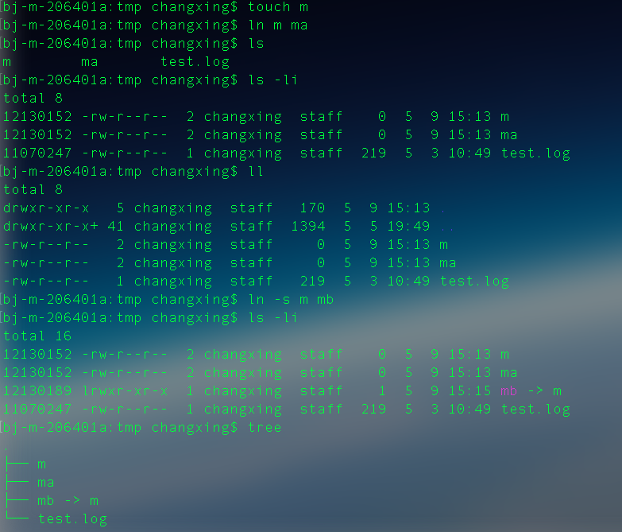
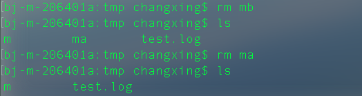

Linux系统中硬链接与软链接

Linux系统中硬链接与软链接
在 UNIX 系统中，操作系统为磁盘上的文本与图像、鼠标与键盘等输入设备及网络交互等 I/O 操作设计了一组通用 API，使他们被处理时均可统一使用字节流方式。换言之，UNIX 系统中除进程之外的一切皆是文件，而 Linux 保持了这一特性。
为了便于文件的管理，Linux 还引入了目录（有时亦被称为文件夹）这一概念。目录使文件可被分类管理，且目录的引入使 Linux 的文件系统形成一个层级结构的目录树。
这在 Linux 上被分成两个部分：用户数据 (user data) 与元数据 (metadata)。用户数据，即文件数据块 (data block)，数据块是记录文件真实内容的地方；而元数据则是文件的附加属性，如文件大小、创建时间、所有者等信息。在 Linux 中，元数据中的 inode 号（inode 是文件元数据的一部分但其并不包含文件名，inode 号即索引节点号）才是文件的唯一标识而非文件名。文件名仅是为了方便人们的记忆和使用，系统或程序通过 inode 号寻找正确的文件数据块。
【硬连接】
硬连接指通过索引节点来进行连接。在Linux的文件系统中，保存在磁盘分区中的文件不管是什么类型都给它分配一个编号，称为索引节点号(Inode Index)。
在Linux中，多个文件名指向同一索引节点是存在的。一般这种连接就是硬连接。
硬连接的作用是允许一个文件拥有多个有效路径名，这样用户就可以建立硬连接到重要文件，以防止“误删”的功能。其原因如上所述，因为对应该目录的索引节点有一个以上的连接。
只删除一个连接并不影响索引节点本身和其它的连接，只有当最后一个连接被删除后，文件的数据块及目录的连接才会被释放。也就是说，文件真正删除的条件是与之相关的所有硬连接文件均被删除。
【软连接】
另外一种连接称之为符号连接（Symbolic Link），也叫软连接。软链接文件有类似于Windows的快捷方式。它实际上是一个特殊的文件。在符号连接中，文件实际上是一个文本文件，其中包含的有另一文件的位置信息。
具体操作结果如下
ln "$file name" "$file_name" #创建硬链接 也可以用link
ln -s "$file_name" "file_name" #创建软链接

删除指令影响
只有删除全部硬链接时才会删除原文件
